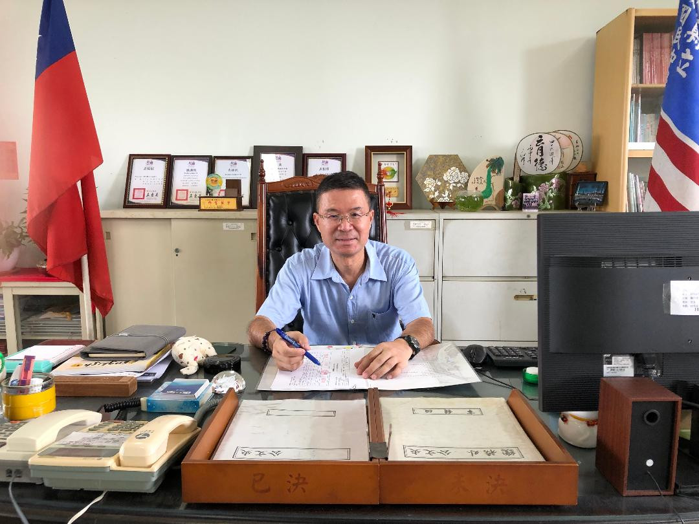

i.
Fit Before Category
有教無類 · 因材施教
No child is "the wrong category." Every learner gets a path that matches their actual strengths — not a one-size-fits-all funnel.

Since 2021A Ph.D. in Educational Policy & Administration from National Chi Nan University (NCNU), formerly principal of Wansing and Fusing Junior Highs — Principal Chao took office at Dacheng on August 1, 2021 and has publicly committed to staying through to retirement in the 118 school year (2030): five more years of unbroken service to this coastal-rural school.
國立暨南國際大學教政系博士、曾任萬興國中、福興國中校長——趙士瑩校長於 2021 年 8 月 1 日接任大城國中校務，並在 113-118 校務發展計畫中公開承諾「在大城國中任職五年後屆齡退休」，亦即留下完整的 110-118 學年度九年任期，不中途離開偏鄉。
Principal Chao's qualifications are an unusual combination in Taiwan's rural school system: he earned his Doctorate in Educational Policy & Administration from National Chi Nan University (NCNU) — a heavyweight policy programme — and brought that academic depth straight back to the front line of junior-high leadership in Changhua.
在台灣偏鄉學校體系裡，趙校長的學養是一個少見的組合：他是國立暨南國際大學教政系博士——一個重量級的教育政策博士班——而他選擇把這份學術深度，直接帶回彰化縣國中校長的第一線。
Before Dacheng, he served as principal of Wansing Junior High and then Fusing Junior High. The path is a deliberate one: from one rural Changhua school to the next, each time carrying the same six guiding principles and translating them into the specific context of a new place. Dacheng is his third principalship, and the second time he has taken charge of a coastal-rural school.
在大城國中之前，趙校長先後接任彰化縣萬興國中與福興國中校長。這條路線是有意為之的——一所偏鄉學校、再一所偏鄉學校，每一次都帶著同樣的六大理念，再轉譯到新的在地脈絡。大城是他第三所校長的學校，也是他第二次接掌沿海偏鄉校。
Since arriving in 2021, the campus has steadily reshaped itself under his watch. The outdoor courts were completed in 110 school year (2021). The Books for Taiwan 愛的書庫 partnership was established in 2022. Anti-bird-strike netting went up over the teaching block and covered athletic court the same year, after the principal walked the campus once too often to ignore the problem. In 2023 the school added a solar photovoltaic outdoor court and a chemistry & physics laboratory, and held its 60th-anniversary celebration — recognising 15 distinguished alumni for the first time in the school's history. In 2024, alumnus Mr. Tang Chien-Tsai donated 13 Hitachi inverter air conditioners to make the summer working conditions across every office bearable.
2021 上任以來，校園在他手上一年一年改變。戶外球場於 110 學年度落成；2022 年成立「愛的書庫」，並向縣府申請經費改善鳥害問題，於教學區與風雨球場設置防鳥網。2023 年戶外球場增建為光電球場，新設一間理化實驗室，並舉辦創校 60 週年校慶——首度表揚 15 位歷屆傑出校友。2024 年向校友唐建財先生募款，捐贈本校 13 台日立變頻冷氣，解決夏季辦公室炎熱問題。每一件，都是「校長會出現的地方」。
He often tells students that "education has nothing to do with category — only with fit." Among the staff, he is known for arriving early, listening longer than he talks, and trusting teachers to do the work they were trained to do. Among parents, he is known for showing up — at sports days, at the after-school technical-arts shop, at the Living Water Pavilion when students are reading aloud.
他常對學生說：「有教無類，因材施教」——教育跟分類無關，只跟「適合」有關。在校內，他以早到、聽得比說得多、放手讓老師專業發揮著稱；在家長眼中，他是一位「會出現的校長」——運動會、技藝班工坊、活水軒朗讀現場，都看得到他。
In the 113-118 school development plan, he wrote one sentence that anchors the rest: "I intend to stay at Dacheng for the next five years until I reach retirement age, continuing to serve this rural community and the children who grow up here." It is a commitment uncommon in Taiwanese school principalship, and the operating assumption behind every line on this site.
在 113-118 校務發展計畫中，他寫下一句話，把其他承諾都釘住：「將繼續在大城國中任職五年後屆齡退休，在這段期間持續服務偏鄉，照顧偏鄉子弟。」 這在臺灣國中校長體系裡並不常見——也是本網站每一個段落背後的營運假設：校長不會中途離開。
These six principles, written by Principal Chao himself for the school's official record, sit alongside the three "anchors" featured on Dacheng's homepage. The anchors are what we lean against; the principles are how we promise to behave.
這六項辦學理念是趙校長親自寫下、刊載於學校官方頁面的承諾。對應主頁上的「三大主軸」——主軸是我們倚靠什麼，理念則是我們答應自己怎麼做。
No child is "the wrong category." Every learner gets a path that matches their actual strengths — not a one-size-fits-all funnel.
The school is the first society a teenager learns to navigate. We build a place where dignity and character development come before scolding and ranking.
Curriculum, counselling, and daily routines are designed to grow respect for life — one's own, one's classmates', and the wider community's — and the habit of helping.
Dacheng's geography is not a limitation. The curriculum interlaces local roots — coast, paddy, township — with international perspectives. This bilingual website is one of the threads.
A school is only as strong as its staff. We actively support teachers pursuing further qualifications, in-service training, and leadership development — every year, not just on paper.
A rural school cannot work alone. Dacheng's daily life is held up by three legs together — staff, parents' association, and the Dacheng Township community around the school gate.
This is the line Principal Chao gives to every Dacheng graduate. It is a wish that they leave the school knowing exactly where they came from, exactly what their hands can do, and exactly how far their minds can travel.
這是趙校長送給每一位大城國中畢業生的話。願他們離開校門時，清楚自己從哪裡來、清楚自己這雙手能做什麼、也清楚自己的腦袋可以走多遠。